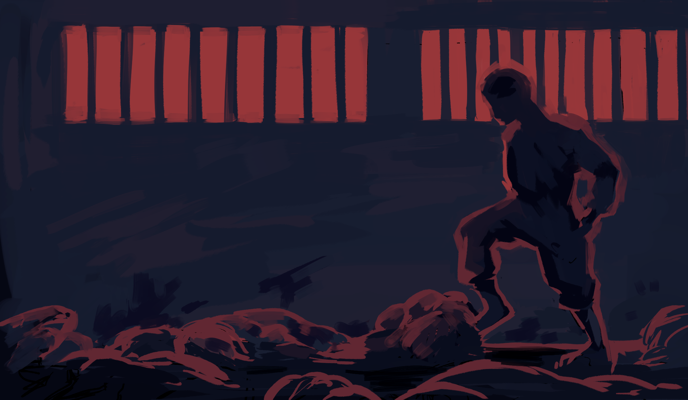

Новые сообщения
сегодня

Подробнее
Иногда я думаю, что наверное так и выглядело военное время. Никаких писем, никаких ответов, просто смотришь в стену и ждешь чего-нибудь. От кого-нибудь. Я спрашивал отца, нет ли возможности как-то найти данные твоей семьи, и он отругал меня тут же. Мы все-таки не на второй мировой. Моя семья безотрывно смотрит телевизор. Все протестующие объявлены террористами. Военные преступления. Трибунал. Я не разбираюсь во всем этом. Оппозиционные силы, видите ли, не хотят идти на диалог, силы государства действуют правомерно.
Поэтому что, пытаются диалог выбить? Разве насилие это вообще правильный подход? Я видел записи с выступлений. Люди танцуют на площадях с флагами. Снимают обувь, когда встают на лавки. Потом это разбавляется всеми ужасами, которые рассказывают вышедшие из камер. Уже есть те, кто вышел, а где ты? Жаль, у тебя нет какого-нибудь домика в деревне без связи, я мог бы хотя бы верить в то, что ты куда-то сбежала. Может, у твоих родственников есть? Часть наших общих знакомых выходит с впн, постит мемы, отвечает в инстаграмме на вопросы о жизни. Я рад за них, но где же ты?
Мы же подростки, мы не должны переживать революции, мы должны смеяться над дурацкими постами, смотреть смешные видосы, устраивать голодные забастовки, когда нас не выпускают из дома. Не настоящие.
Меня бесит, что я всё это пишу так, будто на самом деле переживаю те вещи, которые читаю в интернете, но они же касаются тебя. Значит и меня. Да и всего мира, как можно просто смотреть и верить в то, что тысячи человек просто бандиты, или что там. На самом деле их мало и у власти все под контролем? Ну да. Конечно.
На памятнике Жанны Д’Арк повесили поддерживающие плакаты. Хотел тебе скинуть, ты же ее любишь, но вовремя опомнился. Надеюсь, у тебя будет шанс посмотреть, когда выйдешь в сеть.
Жанна Д’Арк же тоже была подростком. Если ты – Жанна, надеюсь,
оппозицию хотя бы не будут сжигать на костре.